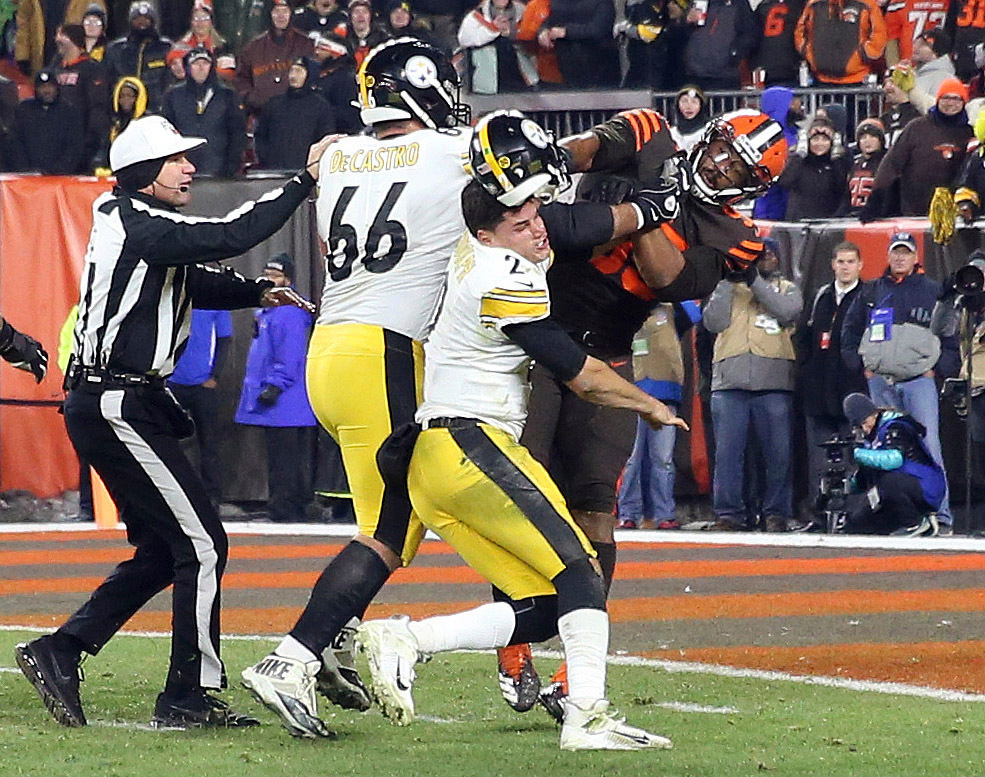

Esports Live: Can the NFL Get Off the Bench?
by Esports Live: Can the NFL Get Off the Bench?
Last Updated - 5 Days Ago

The crowd's roar pounds the space with window decibels that are vibration. The gamers are ready and stressed. The loading displays complete along with the foray unfolds. This is the fact of Esports occasions. Stadiums fill. Fans watching displays of characters performing struggle for objectives. Sports such as soccer, baseball, and basketball mastered the arena experience. Stadiums that belongs to video game contests.
Money flooding into those esports. Deals harvest up, streaming bank is made by arrangements, and hopefuls are brought about by money awards. Sports appear to be on the way out, but would be the benched?
The Rush of Esports Live
Esports discuss the majority of the features with sports. The events occur in championships and teams during year or a season. At a grand finale, the teams compete In the conclusion. Players examine this game's strategies, in addition to the drama styles of experts. Players scouted and get exchanged for group or a single league or another. The gap is demarcated by presentation. Esports demonstration takes a display because the matches are played in digital and virtual worlds. At esports occasions cameras may stick to the players. Watching somebody press switches doesn’as viewing the outcomes of these button presses, t communicate. Spectators reveal exuberance and intention to be in online, whether viewing online by means of a service like YouTube or Twitch or even reside at a stadium event. The gap between the crowd and the players is slim. A number of the people seeing understand the choices, the motions, the approaches and the jargon and have played the sport. They ask themselves what they'd do. They forecast activities and moves. They pleasure in seeing things t even possess urge or the time.
The Loss of Traditional Sports
Sports that are Conventional suffer from migraines. The ability to observe the vital games and stick to a group through a year get more costly and not as comfortable with every passing year. Public broadcasting provides the occasions for audiences. The World Series, the NBA playoffs, as well as the Super Bowl earn money. Record-breaking prices to produce and air commercials for the Super Bowl make splashy news things almost each year. Merchandising earnings and the requirement to maintain those earnings are also a significant issue. While accredited providers of excellent products such as NFL store UK supply a value for enthusiasts to encourage the groups, knock-offs flooding the marketplace. Associations and leagues cover fees to fight rebroadcasts and knock-offs. Even as the wave of interested parties which don’t even look keen on paying what they need, climbs.
The Triumph of Esports Business Model
Products take an advantage over sports. Everyone can buy basketball or a soccer. Areas, targets, and hoops are by local communities. Playing a conventional game comes cheap and small to none of this gain goes to the expert associations. They have upgrades, Though many of the games live entertainment are free to perform. It costs nothing to obtain a MOBA for example League of DOTA 2 or Legends. Avenues exist for gamers seeking to raise their roster of play choices and personalities. They could make them grinding away in the matches or they could accelerate the procedure for real world money. These games also contain a lot of costumes and player customization choices which include no practical advantage in-game but to shovel money to the parent firms. They do this past projections. By producing replays and opinion modes from the sport esports build. This is to aid players enhance and view their performances, but it demonstrates that requirement mindest that is broadcasting. Below a profit umbrella, esports reside with cash coming in by the matches themselves. Broadcasting tournaments function as a giant commercial for its center product. Broadcast and Product fees pile on the earnings. There is the gaming. Aficionados and spectators seeking to ply their understanding have exploded in the last couple of decades. The overall multinational character of esports sets it ahead of conventional sports who can engage, and how fast.
The NFL Fights Back
The NFL, in particular, reveals some concern to the cash esports events create. Pushes and deals to the market from the US sports giant have proven a few yields. The yields don’a dying business is reflected by t, however they don’t show promise. Amounts on programs like Verizon and Yahoo reveal that millions of viewers listen. Nothing on par with all 10s of millions that observe a match on tv. Then it requires to discover a means, if the NFL & rsquo business model is still approximately viewership. Streaming services might be the window into the world. For streaming to make use of sports that are conventional, they will need to have a page. To give something in the seeing that provides the fire. For many years fantasy soccer organizations have longed to make an effect. The NFL’so embrace of those actions constitutes another bag. Although the dream community is supported by some, others come out from it. Wrapping up it The NFL remains a entity earning more money. However, for how long? Esports continues to NFL and grow viewership declines. The NFL will to modify practices and its aims, also it will have to produce a case for why it shouldn&rsquo. Until recently, attempts to skillet comparisons involving sports and esports have functioned. With more folks playing all of the time to games, the point with this particular dismissal has came. To continue to contend the NFL needs start to examine and learn from their competitions & rsquo; plans and to swap out of blowing their opponents. How sports contests, not or electronic, always do. For fascinating elements of entertainment and gaming and more information on this issue, have a look at our abundance of posts.
Leave a Comment:
Search
Advertisement